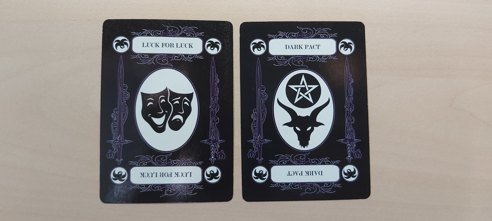

The Deck of Many Pains

Context
Curse of Strahd is a gothic horror adventure for 5th Edition Dungeons & Dragons. I had about a month of prep time before my campgain began, and I really wanted to add lingering injuries to the game, but I didn't want them to feel demoralizing or like just a resource tax. I also love playing into the game's themes of fate and tarot card readings. So, I designed mechanics for using a deck of cards to inflict injuries on characters, and specific injury effects for all 54 cards. I am not an artist, so I sourced images from the internet, then vectorized, colored, and arranged them in Illustrator. With the exception of the images I sourced from the internet, everything was designed by me from scratch. I call it the Deck of Many Pains.

The Deck of Many Pains
The Deck of Many Pains is a deck of cards built to add injuries to TTRPGs that have specific effects, leave scars, and are sometimes permanent. This deck is a regular source of body horror, player disempowerment, and character death, which is perfect for my Curse of Strahd campaign, but wouldn't fit well in a standard heroic campaign. The basic rules are as follows:
When a character takes massive damage (half or more of their hit point maximum) in one turn, they must draw from the deck.
- If the character is conscious after taking this damage, they draw three cards face up, choose one, and discard the rest.
- If the character is unconscious after taking this damage, they instead draw three cards face down without looking at them. For every failed death saving throw, discard one card, to a minimum of one card. Once the character stops dying, reveal the remaining cards, choose one, and discard the rest.
- If the character dies instantly, draw and choose one card.
Click here for a play-by-play example.
The chosen card immediately deals the injury listed on it, and should then be kept by the player as a battle scar. Discarded cards are reshuffled when the deck runs out, but chosen cards are never reshuffled. That means that the deck gets progressively more dangerous as the campaign goes on, and every reshuffle means a greater change of drwaing serious injuries
When characters deal massive damage to an NPC, they can choose to inflict an injury upon them. However, they must decide between the immediate benefit of an injured enemy, and the long-term impact of removing one more card from the deck…
The Cards
Injury effects are organized based on the suit and rank of the card. Suits measure the severity of the injury, while ranks measure the location or type of injury. They combine to describe injuries in only a few words, like Arm of Relief, Elemental Pain, or Eye of Gore. The specific injury that each of these cards represents in-game is left to the table to describe in as much bloody detail as they'd like.
Suits are divided into Relief (Hearts), Pain (Diamonds), Blood (Clubs), and Gore (Spades).
- Relief deals instantaneous effects like dropping what you're holding, catching fire, or opening a wound.
- Pain deals effects that last up to a minute like momentary blindness, jarred bones, or choking on smoke.
- Blood deals effects that last until a long rest like tearing muscles, wounds that don't stop flowing, and minor concussions.
- Gore deals effects that last for days or are permanent like broken bones, lost limbs, and deep tissue scars.
Ranks are divided into numbered cards and face cards.
- Numbered cards represent injuries to specific body parts: Head (Ace), Eyes (2), Face (3), Arms (4-5), Legs (6-7), and Torso (8-10). If the card is drawn right side up (facing the player), then the injury is to the right eye/arm/leg, and vice versa.
- Face cards are Elemental, representing injures based on the damage type that caused the injury, like burning from fire, bleeding from cuts, and withering from necromancy.
Finally, there are two Jokers, which are wild cards. One is a Dark Deal, where the character makes a deal with a malicious entity in exchange for suffering no immediate injury. The other is Luck for Luck, where the character accepts bad luck in the future in exchange for suffering no injury right now.
Long-Term Injuries
Blood and Gore injuries will ask for Healing (Constitution) Saving Throws at the end of short or long rests, and their DCs can be lowered by 5 for each Healing Factor applied to the injury. Each type of Healing Factor can only apply once per saving throw. If a creature has multiple injuries, each Healing Factor only applies to one of them, though the same type of Healing Factor can be applied multiple times if each is to a different injury.
What counts as a Healing Factor is up to the GM's judgement. Suggested Healing Factors may include, but are not limited to:
- A casting of Lesser Restoration.
- A whole day spent in rest.
- Receiving healing equal to half or more of their hit point maximum from one source (this does not restore a character's hit points as well).
- A DC 15 ability check using an alchemist's supplies, a herbalism hit, or a healer's kit (each considered an independent Healing Factor).
Unique materials and techniques may apply as Healing Factors to specific injuries, such as:
- Holy water or blessings from a priest to heal a necrotic injury.
- A DC 15 ability check using Cook's utensils, gaming sets, musical instruments, or painter's supplies to heal a psychic injury.
- Carpenter's tools, cobbler's tools, smith's tools, tinkerer's kits, and woodcarver's tool to build disability aids, which count as Healing Factors for every saving throw while in use. Assuming that a character can "take 20" over a long period of time, simple aids like crutches and canes could require a DC 20 ability checks, advanced aids like peg legs, braces, and casts could require a DC 25 ability check, and masterwork aids like prosthetics could require a DC 30 ability check.
Some spells and abilities like Greater Restoration may count as an immediate successful Healing Saving Throw when applied, while others like Heal may immediately cure the injury when applied. Again, GM discretion is required.
Rules Suggestions for Other Systems
Use the 5th Edition Rules for an example of what these mechanics look like in practice, but when designing for your own use there are things to keep in mind.
First off, the length of injuries should be paced so that they are only around for a short amount of time in-game. Relief cards are instant, Pain cards last for the remainder of the combat, Blood cards last for a session, and Gore cards last for several sessions or are made permanent. How longs these actually are in practice depends on the timescale of the game. For example, a Gore card in D&D might last a week in-game, while that same card in Pendragon might last years. It may be unrealistic for a broken arm to heal in a week, but in-game the end of the injury should always be within sight. If it overstays its welcome, the experience may shift from an engaging challenge and roleplay opportunity to a nuisance.
Second, since Blood and Gore injuries last for so long, characters should be able to apply Healing Factors to them to lessen their detrimental effects. What counts as a Healing Factors is up to the Game Master's judgement, but should include things like medicine, healing spells, and resting. It should be difficult or near-impossible to lessen injury effects without Healing Factors, and you should reward creative but logical ways to tend to the wounds as you have established them in the fiction.
Third, if you want to develop your own effects for the Deck, avoid the urge to account for every possible way it can impact the game. Either keep the effects evocative and simple, or just say what the injury is and make rulings as they come up. For example, with a leg injury the effect could be slower movement speed and worse reflexes, but what about if someone wants to shoot a bow with an injured leg? You could just ignore it, or rule that their shot is worse without using a support like a cast, or rule that their shot is fine but they might fall over after making it. All of these are fine rulings, but they're edge cases and shouldn't be specifically accounted for in the injury effects.
Lastly, keep it simple. There's already a lot of complexity with 54 possible effects that may occur, but in play it should be quick and easy to use. It may be tempting to introduce spells, feats, and class abilities that let players interact with the deck in unique ways, but the more rules and exceptions you include, the more of a chore the deck will become to play. If players really want their characters to be able to bend and change certain rules, then develop those mechanics with the player on a case-by-case basis.